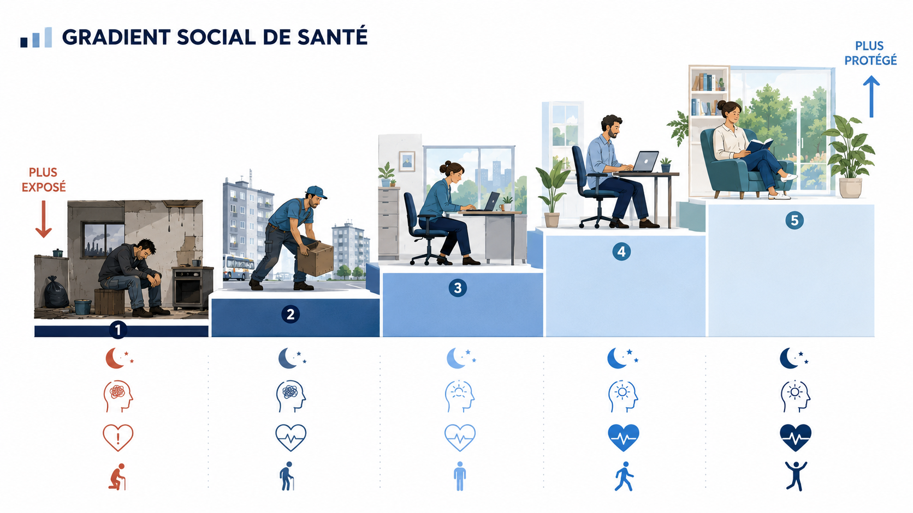
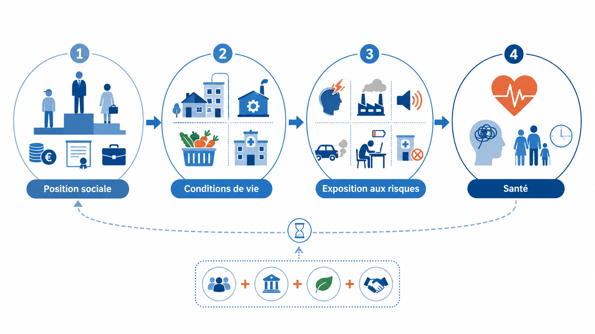
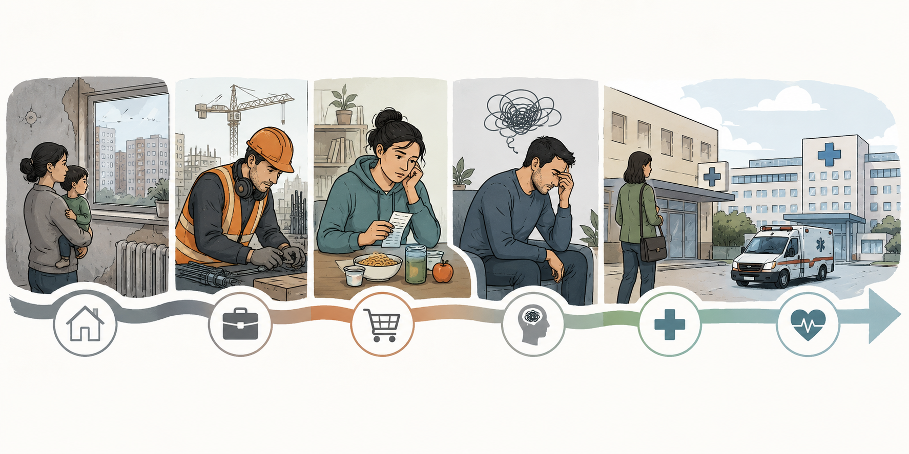
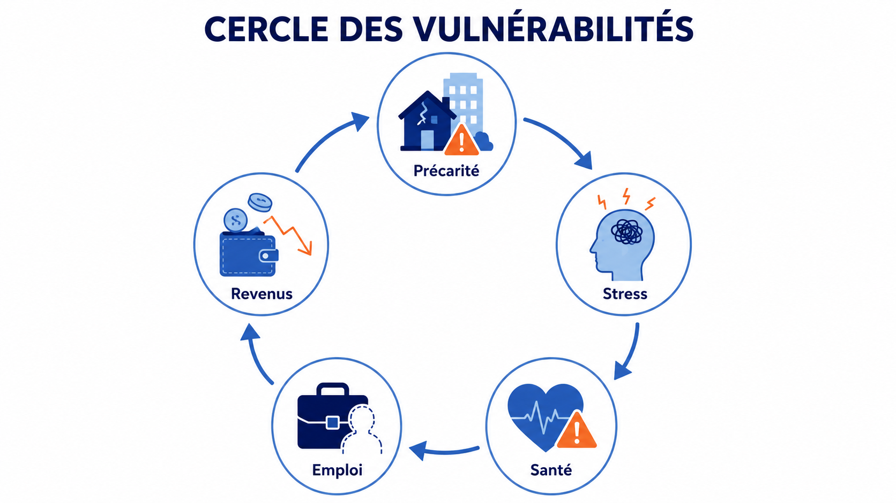

Dans cette page
Comprendre le problème Ce que montrent les données Explorer les données INSEE Carte interactive des mécanismes La santé se construit avant l’hôpital Les grandes chaînes d’explication Wilkinson et Pickett Ce que l’on peut affirmer avec prudence Trois idées reçues à dépasser SourcesComprendre le problème
Les inégalités sociales influencent la santé parce qu’elles modifient les conditions concrètes dans lesquelles les personnes vivent : logement, travail, revenus, stress, accès aux soins, alimentation, environnement, relations sociales et possibilités de prévention.
Quand on parle de santé, on pense spontanément aux médecins, aux hôpitaux, aux médicaments ou aux comportements individuels. Ces éléments comptent évidemment. Mais ils ne suffisent pas à expliquer pourquoi, dans une même société, certains groupes vivent plus longtemps, tombent moins souvent malades ou accèdent plus facilement aux soins que d’autres.
La santé n’est pas seulement une affaire biologique ou médicale. Elle est aussi profondément sociale. Deux personnes peuvent vivre dans le même pays, bénéficier du même système de santé en théorie, et pourtant ne pas avoir les mêmes chances de rester longtemps en bonne santé. Le revenu, le métier, le niveau de diplôme, le logement, le territoire, l’environnement, la stabilité de l’emploi, la qualité de l’alimentation, le niveau de stress ou la capacité à accéder à la prévention peuvent influencer durablement l’état de santé.
L’Organisation mondiale de la santé utilise l’expression “déterminants sociaux de la santé” pour désigner les conditions dans lesquelles les personnes naissent, grandissent, vivent, travaillent et vieillissent.1 Cette formule est importante parce qu’elle déplace le regard. Elle rappelle que la santé ne commence pas seulement dans le cabinet du médecin ou à l’hôpital. Elle se construit dans la vie quotidienne.
Ce que montrent les données
Les données disponibles montrent que la santé suit souvent un gradient social. Cela signifie que les écarts de santé ne se limitent pas à une opposition simple entre les plus pauvres et les plus riches. Très souvent, on observe une progression : plus la position sociale est favorable, meilleurs sont en moyenne les indicateurs de santé.

Écart à 35 ans entre hommes cadres et hommes ouvriers en France, selon les conditions de mortalité de 2020-2022.2
Écart à 35 ans entre les hommes diplômés du supérieur et les hommes sans diplôme, selon les données INSEE 2020-2022.2
Dans les pays de l’OCDE, les personnes du quintile de revenu le plus faible déclarent beaucoup plus souvent des besoins médicaux non satisfaits.3
Ces chiffres ne signifient pas que la position sociale détermine mécaniquement la santé de chaque individu. Ils montrent plutôt qu’à l’échelle des populations, les groupes sociaux ne sont pas exposés aux mêmes risques et ne disposent pas des mêmes protections.
Point de méthode. Une corrélation ne prouve pas à elle seule une causalité directe. Mais lorsque plusieurs sources convergent — données institutionnelles, études longitudinales, travaux de santé publique — elles rendent nécessaire l’analyse des conditions sociales de santé.
Explorer les données INSEE
Le graphique ci-dessous permet d’explorer les données de l’INSEE sur l’espérance de vie à 35 ans. Il ne s’agit pas d’un score individuel, mais d’une comparaison statistique entre groupes sociaux. L’intérêt est de rendre visible le gradient social : les écarts apparaissent selon la catégorie socioprofessionnelle, mais aussi selon le niveau de diplôme.
Graphique interactif — Espérance de vie à 35 ans
Carte interactive des déterminants sociaux
Les déterminants sociaux de la santé n’agissent pas séparément. Ils se combinent. Un revenu faible peut peser sur le logement, le logement peut peser sur le sommeil, le sommeil sur la fatigue, la fatigue sur le travail, et le travail sur les revenus. Cette logique cumulative est essentielle pour comprendre les inégalités de santé.

Clique sur un facteur pour comprendre comment il peut agir
Revenus
Les revenus influencent la qualité du logement, l’alimentation, la possibilité de se chauffer, de se reposer, de consulter, de se déplacer ou d’acheter certains biens nécessaires à la santé. Ils ne déterminent pas tout, mais ils modifient fortement les marges de choix dans la vie quotidienne.
La santé se construit avant l’hôpital
Une idée essentielle traverse les travaux de santé publique : une grande partie de la santé se joue avant l’apparition de la maladie. L’hôpital soigne, répare, accompagne, soulage et sauve des vies. Mais il intervient souvent lorsque les problèmes sont déjà là. Les déterminants sociaux de la santé invitent au contraire à regarder ce qui se passe en amont : le logement, l’alimentation, le travail, l’éducation, l’environnement, les revenus, les transports, la sécurité matérielle et les relations sociales.

Une personne qui vit dans un logement humide, mal chauffé, bruyant ou surpeuplé n’est pas exposée aux mêmes risques qu’une personne vivant dans un logement stable, sain et confortable. Une personne qui occupe un emploi pénible, instable ou peu reconnu ne subit pas les mêmes contraintes qu’une personne bénéficiant d’un travail sécurisé, autonome et mieux rémunéré.
Cette idée est au cœur du rapport de la Commission de l’OMS sur les déterminants sociaux de la santé, présidée par Michael Marmot. Le rapport défend l’idée que les inégalités de santé ne sont pas seulement le résultat de différences individuelles, mais qu’elles découlent aussi de conditions sociales inégalement réparties.7
Les grandes chaînes d’explication

Les conditions matérielles
Le premier mécanisme reliant inégalités et santé est matériel. Les revenus influencent directement ce qu’il est possible de faire au quotidien. Ils conditionnent le type de logement auquel on peut accéder, la qualité de l’alimentation, la possibilité de se chauffer correctement, de se reposer, de partir en vacances, d’acheter certains produits de santé, de pratiquer une activité physique ou de vivre dans un environnement moins exposé au bruit et à la pollution.
L’accès réel aux soins
Dans beaucoup de pays, l’accès aux soins est présenté comme un droit. Mais un droit formel ne garantit pas toujours un accès réel. Les obstacles peuvent être financiers, géographiques, administratifs, culturels ou temporels. Le coût de certains soins, les dépassements d’honoraires, les délais de rendez-vous, les déserts médicaux, la complexité des démarches ou la peur d’être mal reçu peuvent freiner le recours aux soins.
L’OCDE montre que les besoins médicaux non satisfaits sont plus fréquents chez les personnes à bas revenu.3 En France, la DREES a également documenté les ressorts sociaux du renoncement aux soins pour raisons financières.10 Ces données rappellent qu’un système de soins peut être présent sans être également accessible à toutes et tous.
Le stress chronique
Le stress n’est pas seulement une émotion passagère. Lorsqu’il devient durable, lorsqu’il est lié à l’insécurité financière, à la peur du déclassement, à des dettes, à un emploi instable, à des conflits au travail, à des discriminations ou à l’impossibilité de se projeter, il peut peser sur la santé physique et mentale.
Étude clé — Whitehall
Les études Whitehall, menées auprès de fonctionnaires britanniques, sont devenues une référence pour comprendre le gradient social de santé. Elles ont montré qu’il existait des différences de mortalité et de morbidité selon le grade d’emploi, y compris dans une population salariée relativement stable. Dans une publication de 1978, les hommes du grade le plus bas présentaient une mortalité coronarienne 3,6 fois plus élevée que ceux du grade le plus élevé.4
Le travail, entre protection et usure
Le travail peut être protecteur lorsqu’il apporte un revenu, une stabilité, une reconnaissance, des relations sociales et un sentiment d’utilité. Mais il peut aussi devenir un facteur d’usure lorsqu’il expose à la pénibilité, au stress, aux horaires décalés, aux risques physiques ou à une faible autonomie. La DARES a publié des travaux sur les disparités d’exposition aux facteurs de pénibilité en milieu professionnel et leurs liens avec les inégalités sociales de santé.12
Les relations sociales et le capital social
La santé dépend aussi des relations sociales. Avoir des proches, des voisins, des collègues, des associations ou des réseaux d’entraide peut aider à surmonter des difficultés. À l’inverse, l’isolement, la défiance, l’instabilité résidentielle ou la précarité peuvent fragiliser les personnes. Le capital social ne remplace pas les revenus, les droits sociaux ou les services publics, mais il peut faciliter l’accès à l’information, au soutien émotionnel et à l’aide pratique.
Wilkinson et Pickett : une thèse forte, influente et discutée
Richard Wilkinson et Kate Pickett ont joué un rôle important dans la diffusion d’une idée forte : dans les pays riches, le niveau d’inégalité pourrait compter autant, voire parfois davantage, que le niveau moyen de richesse pour expliquer certains problèmes sanitaires et sociaux. Leur thèse, popularisée notamment dans The Spirit Level, affirme que les sociétés plus inégalitaires présentent souvent de moins bons indicateurs dans des domaines comme la santé, la confiance sociale, la violence, la santé mentale ou le bien-être des enfants.
Cette approche est précieuse pour Atlas des Inégalités parce qu’elle permet de relier la santé à d’autres dimensions : confiance sociale, cohésion, criminalité, santé mentale, éducation, mobilité sociale. Elle donne une vision systémique des inégalités.
Thèse influente, mais débattue. Les travaux de Wilkinson et Pickett ont été très influents, mais ils ont aussi été critiqués. Certains chercheurs discutent le choix des pays comparés, la sélection des indicateurs, la stabilité des corrélations ou la difficulté à démontrer une causalité directe. Une bonne démarche consiste donc à présenter ces travaux comme une contribution importante au débat scientifique, et non comme une vérité définitive.13 14
Ce que l’on peut affirmer avec prudence
On peut affirmer que les inégalités sociales sont associées à des écarts importants de santé. Les données françaises sur l’espérance de vie, les données internationales sur l’accès aux soins, les études Whitehall sur le gradient social et les travaux de l’OMS sur les déterminants sociaux convergent vers une même idée : les conditions sociales pèsent lourdement sur la santé.
On peut aussi affirmer que ces liens passent par plusieurs mécanismes. Le revenu, le logement, le travail, l’éducation, l’environnement, le stress, l’accès aux soins et les relations sociales interagissent. Aucun de ces facteurs ne suffit à lui seul à expliquer toutes les différences, mais leur accumulation peut créer des trajectoires de santé très différentes.
En revanche, il faut éviter d’affirmer que les inégalités expliquent tout. Une société peut avoir de mauvais indicateurs de santé pour de nombreuses raisons : système de soins insuffisant, pauvreté globale, crise économique, pollution, comportements de santé, vieillissement démographique, violences, histoire sociale ou politiques publiques défaillantes.
Trois idées reçues à dépasser
“La santé dépend surtout des choix individuels”
Les comportements comptent. Fumer, boire, se nourrir, bouger, dormir ou consulter un médecin influencent la santé. Mais cette idée devient trompeuse si elle oublie que les comportements sont socialement situés. On ne choisit pas son alimentation, son activité physique ou son recours aux soins dans les mêmes conditions selon son revenu, son temps disponible, son logement, son niveau d’éducation ou son environnement.
“Il suffit d’avoir de bons hôpitaux”
Un bon système hospitalier est indispensable. Mais il ne peut pas, à lui seul, supprimer les inégalités de santé. Si les causes sociales des maladies continuent d’agir en amont, l’hôpital intervient souvent trop tard. Une politique de santé efficace doit donc garantir un accès réel aux soins, mais aussi agir sur les déterminants sociaux qui produisent les écarts de santé avant même l’arrivée dans le système médical.
“Les inégalités de santé concernent seulement les plus pauvres”
Les personnes les plus pauvres sont souvent les plus exposées aux risques, mais les inégalités de santé ne s’arrêtent pas à elles. La notion de gradient social montre que les différences de santé peuvent traverser l’ensemble de la société, selon le niveau de revenu, le diplôme, la profession, le quartier ou le degré de sécurité matérielle.
Ce qu’il faut retenir
Les inégalités sociales influencent la santé parce qu’elles modifient les conditions concrètes dans lesquelles les personnes vivent. Elles agissent sur le logement, l’alimentation, le travail, l’environnement, l’accès aux soins, le stress, la prévention et les relations sociales.
Les données ne disent pas que la position sociale détermine entièrement la santé de chaque individu. Elles montrent qu’à l’échelle des populations, les groupes sociaux ne sont pas exposés aux mêmes risques et ne disposent pas des mêmes protections.
Réduire les inégalités sociales peut donc être une manière d’améliorer la santé collective. Cela ne signifie pas qu’il faut abandonner les soins, la prévention individuelle ou la responsabilité personnelle. Cela signifie que ces dimensions seront plus efficaces si elles s’accompagnent d’une action sur les conditions de vie.